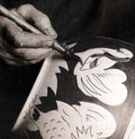

|
Engobes
Engobes
can be defined as liquid clay slips of varying compositions which
are applied to the surface of a clay object, e.g. a pot. The purpose
of the engobe can be as different as the varied forms it comes in:
to give color to a piece; to improve the surface texture; to provide
a ground to do further decoration on; to add textures.
Engobes can be applied to wet clay surfaces, leather-hard ware,
greenware and even bisqued wares. In each case the engobe's shrinkage
rate should match that of the clay underneath, otherwise cracking
(when the engobe shrinks more than the clay underneath) or shivering
(when the clay underneath shrinks more than the engobe on top) can
occur. While there are some basic engobe recipes around, The
Potter's Complete Book of Clay and Glazes by James Chappel
has a range of engobe recipes for diferent grades of moisture content
and firing ranges from cone 10 up to cone 11 (for more information
on cones, see cone chart).
Here is a simple cone 6-11 engobe you can try out on leatherhard
clay (Rhodes, Clay & Glazes for the Potter), but be sure to
do some tests first, before using it on any 'important' stuff:
| Kaolin |
25 |
| Ball clay |
25 |
| Potash feldspar |
20 |
| Flint (Silica) |
20 |
| Zircopax |
5 |
| Borax |
5 |
If applying the above to greenware or bisque, experiment by substituting
increasing amounts of calcined kaolin.
Application techniques for engobes also greatly vary. They range
from dipping to brushing and spraying and even slip-trailing, However,
in contrast to applying glazes to bisque ware, it pays to be careful
when applying engobes to greenware, as the clay can soften and deform,
e.g. if a pot is dipped too long. During application, wax or latex
can be applied as a resist. Once the engobe has hardened, designs
can be scratched in, revealing the clay body underneath.
Next Page > Engobe
Color Chart > 2
More Articles
|